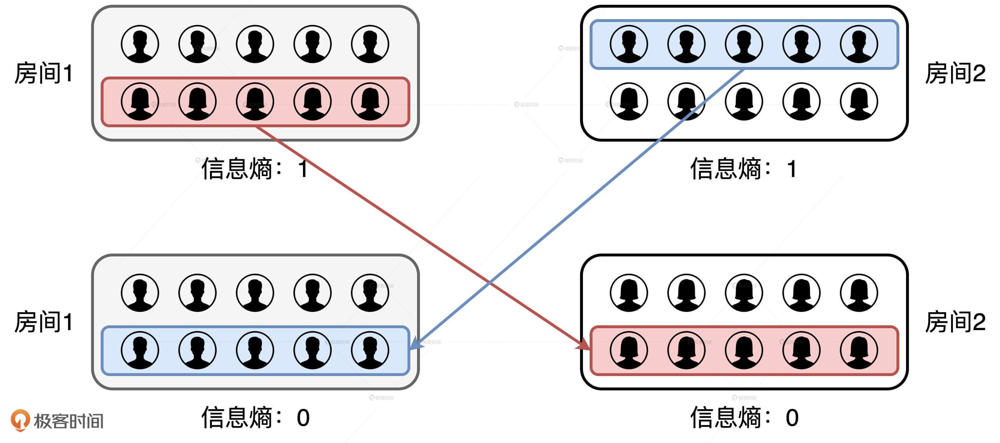
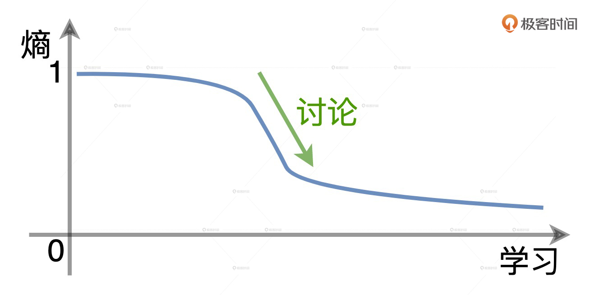

- 00 开篇词 Spark性能调优，你该掌握这些“套路”.md
- 01 性能调优的必要性：Spark本身就很快，为啥还需要我调优？.md
- 02 性能调优的本质：调优的手段五花八门，该从哪里入手？.md
- 03 RDD：为什么你必须要理解弹性分布式数据集？.md
- 04 DAG与流水线：到底啥叫“内存计算”？.md
- 05 调度系统：“数据不动代码动”到底是什么意思？.md
- 06 存储系统：空间换时间，还是时间换空间？.md
- 07 内存管理基础：Spark如何高效利用有限的内存空间？.md
- 08 应用开发三原则：如何拓展自己的开发边界？.md
- 09 调优一筹莫展，配置项速查手册让你事半功倍！（上）.md
- 10 调优一筹莫展，配置项速查手册让你事半功倍！（下）.md
- 11 为什么说Shuffle是一时无两的性能杀手？.md
- 12 广播变量（一）：克制Shuffle，如何一招制胜！.md
- 13 广播变量（二）：如何让Spark SQL选择Broadcast Joins？.md
- 14 CPU视角：如何高效地利用CPU？.md
- 15 内存视角（一）：如何最大化内存的使用效率？.md
- 16 内存视角（二）：如何有效避免Cache滥用？.md
- 17 内存视角（三）：OOM都是谁的锅？怎么破？.md
- 18 磁盘视角：如果内存无限大，磁盘还有用武之地吗？.md
- 19 网络视角：如何有效降低网络开销？.md
- 20 RDD和DataFrame：既生瑜，何生亮？.md
- 21 Catalyst逻辑计划：你的SQL语句是怎么被优化的？（上）.md
- 22 Catalyst物理计划：你的SQL语句是怎么被优化的（下）？.md
- 23 钨丝计划：Tungsten给开发者带来了哪些福报？.md
- 24 Spark 3.0（一）：AQE的3个特性怎么才能用好？.md
- 25 Spark 3.0（二）：DPP特性该怎么用？.md
- 26 Join Hints指南：不同场景下，如何选择Join策略？.md
- 27 大表Join小表：广播变量容不下小表怎么办？.md
- 28 大表Join大表（一）：什么是“分而治之”的调优思路？.md
- 29 大表Join大表（二）：什么是负隅顽抗的调优思路？.md
- 30 应用开发：北京市小客车（汽油车）摇号趋势分析.md
- 31 性能调优：手把手带你提升应用的执行性能.md
- Spark UI（上）深入解读Spark作业的“体检报告”.md
- Spark UI（下）：深入解读Spark作业的“体检报告”.md
- 期末考试 “Spark性能调优”100分试卷等你来挑战！.md
- 结束语 在时间面前，做一个笃定学习的人.md
结束语 在时间面前，做一个笃定学习的人
你好，我是吴磊。
时间犹如白驹过隙，不知不觉，就到了要和你说再见的时候。当编辑对我说：“老师，这周要把结束语赶出来哟”，我忽然愣住了，觉得有些恍惚和不真实，并没有像往常那样脱口而出：“好嘞，没问题！”因为我似乎已经习惯了赶稿子，也习惯了回答评论区的问题，习惯了和大家互动，更习惯了在群里插科打诨……
但是，无论再怎么习惯，我们的专栏也在今天正式结束了。在这里，我想借着这最后的机会，由衷地感谢屏幕前的你、感谢在听音频的你。感谢你一直以来的陪伴和督促，感谢你参与评论区的讨论，感谢你及时地纠正专栏中的错误，更感谢你对于专栏的包容和理解。
同时，我也希望在这个专栏中，我们不仅能共同探讨快速、高效掌握Spark性能的方法，还能把同样的学习技巧迁移到其他的领域。毕竟，高效的学习效率，永远可以让我们快人一步。
我们到底该如何学习？
说起学习这件事，我们听到最多的，就是“学习是一件反人类的事情”，或是“学习的过程就是成长，而成长本来就是痛苦的”。似乎一提到学习，我们就要随时准备“头悬梁，锥刺股”。那真是这样吗？
坦白地说，关于学习的“痛苦学说”，我不是很认同。原因很简单，我们有很多的方法与技巧可以让学习这件事变得有趣，而且事半功倍。那么，对我来说，3个提升学习效率最有效的方法，分别是生产导向的思维方式、“235”的学习原则和“生活化联想”的学习技巧。
生产者思维
我们先来说说生产者思维。如果把形形色色的信息、知识、原理、理论看作是商品的话，那么毫无疑问，热爱学习的我们就是这些“商品”的消费者，我们花费大量的时间、精力和注意力，尝试从这些商品中获取价值。
然而，商品的消费是单向而又被动的，这就好比你从收音机或是电视中被动地收听、收看那些提前烧制好的节目。无论节目的设计与制作多么精良，作为消费者，我们能够消化和吸收的程度都是有限的。
这个时候，我们可以采用以产出内容为导向的学习方式，它会比被动式的学习方式效率更高。就拿技术博客来说，输出内容的过程，其实是帮你发现漏洞和不足的过程，写着写着发现卡住了、进行不下去了，往往意味着这部分知识点或是原理你掌握得不够牢固，需要回炉另造。因此，带着目的、有针对性地学习，往往会事半功倍。以输出为导向去获取输入，就是我们常说的生产者思维。
不过你可能会说：“就算生产者思维确实能够帮助我提升学习效率，可是我真的不知道，生产这件事该从哪里下手”。如果你已经很久没有动过笔了，那么不妨从做笔记开始。做笔记至少有两点收益：一来，它可以强化记忆，也就是俗话常说的“好记性不如烂笔头”；二来，笔记本身就是一种产品形态，或者说是产品的初级形态，它就是最原始的生产资料。
在我们有了生产资料的原始积累之后，生产的过程就会变得很轻松，只要对它们稍作加工，比如调整上下文排列、理顺逻辑关系、变换呈现形式，我们就可以“换着花样”地交付各式各样的产品，比如技术博客、公众号图文，甚至是极客时间上的专栏课程等等。这些产品形态，依然没有逃脱笔记的范畴，它们都是笔记的“变形”。
因此，关于生产这件事，如果你暂时还没有思绪，那么我强烈推荐你从做笔记下手。古人云：“读书破万卷，下笔如有神”。对于生产，我们也可以说“笔记做到家，输出如有神”。
“235”原则
“235”原则指的是要想充分掌握一项技能或是本领，理论学习占两成，交流讨论占三成，动手实践占五成。按照“235”的指导原则，讨论和实践要比理论学习更重要。
实践对于学习的贡献不言自明，“实践出真知”“实践是检验真理的唯一标准”，这些老生常谈的道理强调的都是实践的重要性。不过，在这三个学习要素当中，要说投入产出比最高的，当属交流讨论。为什么这么说呢？这就要说到学习这件事情的本质了。你可能会说：“学习自然是获取知识、习得技能、掌握本领。”但在我看来，学习的本质是一个不断做熵减、消除不确定性的过程。
熵减听上去过于玄乎，我们来举个例子。假设有两个房间，每个房间都有5个男生和5个女生，男女比例都是1：1，如果按照性别来统计的话，那么这两个房间的信息熵都是1。然后，我们让第一个房间中所有的女生都移步到第二个房间，同时让第二个房间里所有的男生都移步到第一个房间。交换完成之后，每个房间的信息熵都降低至0。这就是一个熵减的过程，它消除了房间内“性别”这个属性的不确定性。

学习的过程也类似。对于一项新技术，它是什么？谁创造了它？它解决了什么问题？它的组成要素都有哪些？它是如何工作的？它的适用场景都有哪些？每一个问题都是一个未知变量，所有这些未知变量交织在一起，让这项技术的熵无限趋近于1。而学习的过程，正是以蚕食鲸吞的方式，将一个个未知变量转化为已知变量的过程。在这个过程中，新技术的熵逐级递减，不断趋近于零。
在学习的过程中，不同的方法对熵减的贡献有所不同。交流讨论对于熵减的贡献是指数级的，它是最高效的熵减途径。而这，也是我为什么一直鼓励你参与课后讨论。通过参与讨论，你可以把一些工作中未曾遇到的问题和解决办法，内化为自己的一部分，在拓展认知边界的同时，加深对于技术本身的理解。

而另外两种途径，也就是理论学习和动手实践，它们对于熵减的贡献都是线性而平缓的。你可能会说：“动手实操才应该是贡献最高的呀！”实践固然重要，但你不妨回想一下过往的工作经历，对于某一项技术成百上千条的Code Paths来说，你真正触达到的，总共能有几条呢？
无论我们多么投入、多么勤奋，我们的认知边界总是有限的。而要拓展认知边界，只有通过不断地分享、交流和讨论，才能够做到，这也就是所谓的“他山之石，可以攻玉”。
生活化联想
生活化联想指的是把技术中的原理和知识点映射到生活中来，也就是运用生活化的类比、拟人、比喻等手法，让那些枯燥的原理和知识与生活产生连接。利用“生活化联想”的学习技巧，我们能够很快地吸收新知识。更重要的是，这个技巧可以延长我们的记忆曲线，让我们记得更久。
《人月神话》的作者Frederick Brooks曾经说过：“任何一种软件架构的设计，都逃不脱人类社会的组织结构”。同理，对于层出不穷的技术、琳琅满目的知识点，我们也都能在生活中找到它们的投影。因此，在日常的学习中，我们就可以放心大胆地大开脑洞，勇敢地去尝试把你的所见所学，与生活中有意思的场景建立连接。一旦你开始这么做了，你就会发现，相比同龄人，上帝似乎为你多开了一扇门，那扇门的后面就是绚烂多彩而又有趣的新世界。
而这，也是我为什么会不遗余力、绞尽脑汁、挖空心思地，尝试用一个又一个类比、一个又一个故事，去为你讲解Spark核心概念、关键知识点以及它的工作原理。我的初衷朴素而又简单，就是想让你既能轻松、迅速地消化、吸收，又能把那些枯燥的理论知识记得更牢固、更持久。
建立技术与生活这二者之间的连接，自然少不了要消耗精力和能量，去激活大脑中更多的神经元。但是，你千万别觉得这个过程很痛苦，相反，它其实会让你有一种莫名的期待与兴奋。因为你知道，一旦连接建立完成，那么这条连接两端的东西，技术也好、生活也罢，就都内化成为你的一部分了。
有了生产者思维，遵循“235”原则，同时结合“生活化联想”的学习技巧，我相信，你的学习效率一定会与日俱增。
不见不散
最后，我还是想发自内心地和你说一声：“谢谢！”谢谢你陪我走完了这趟Spark调优之旅。对我来说，陪伴即是最大的认可。
你知道，我既不是Spark Committer，也不是Spark Contributor，只不过是一个对Spark有着无限热情和多年实战经验的开发老兵。我能做的也 仅仅是把我的所学、所见、经验、积累、思路与技巧，像榨汁一样从我的脑海中一滴不剩、毫无保留地压榨出来，再用专栏的形式呈现给你。
才浅学疏，我个人的能力与视野是极其有限的，专栏的内容难免有所疏漏。我真的觉得，就这个专栏来说，我不过是个发起者，就像是一个GitHub项目的创建者，而专栏的勘误、丰富、打磨与完善，实际上仰仗的是每一个像你一样参与订阅的开发者。
因此，尽管我们的专栏结束了，但是，我们学习并不会止步于此。在接下来的一段时间，我会在GitHub中创建一个名为potatoes，也就是“土豆”的项目，把专栏中涉及的代码、数据、结果，以及常见问题等内容汇总到这个项目中去。
不仅如此，结合你的需要，我还会持续不断地向其中添加诸如笔试面试题、工作机会、职业发展等内容，把potatoes项目打造成我们共有的Spark私塾。通过这个私塾，我们不仅能进一步深入学习Spark，还可以建立更多的连接、拓展人脉，并触达更多的机会与可能。项目的地址是：https://github.com/wulei-bj-cn/potatoes.git，我在那里等你，不见不散！
天行健，君子以自强不息。持续学习，与君共勉。
最后的最后，我还为你准备了一份毕业调查问卷，题目不多，希望你能花两分钟的时间填一下。一起走过了这些时间，期待听到你对我和这个课程的反馈和建议！
© 2019 - 2023 Liangliang Lee. Powered by gin and hexo-theme-book.